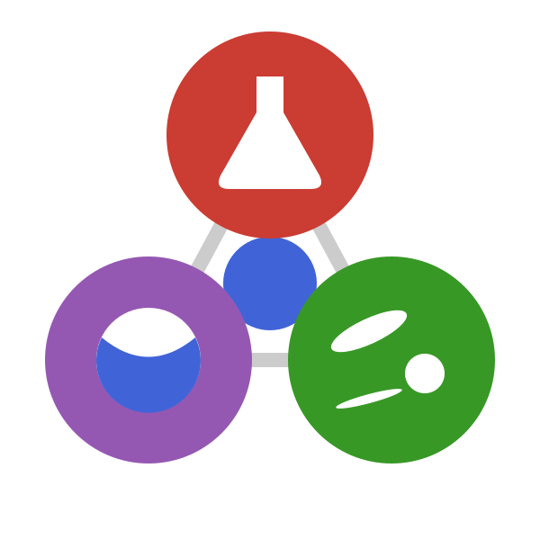

TensND.jl
Julia
Tensors
Linear Algebra
Julia package for symbolic and numerical tensor calculations of any order and dimension in arbitrary coordinate systems, with structured tensor types carrying built-in symmetries.
Open-source scientific libraries I develop and maintain
Academic freeware and open-source scientific libraries, in Julia and in C++.

MicroPoroChemoMechanics is a GitHub organization of which I am one of the owners. It gathers a Julia ecosystem for the coupled micro-chemo-mechanics of porous reactive media, from molecular-level thermodynamic equilibrium up to the macroscopic poromechanical response. The five packages are registered in Julia’s General registry and install with a plain Pkg.add.